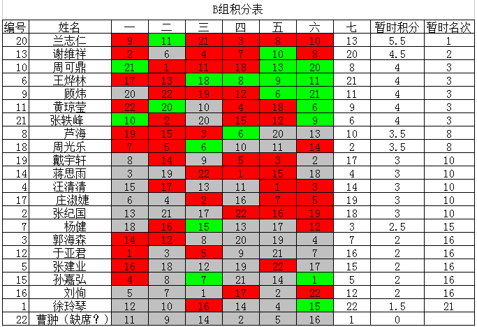

第八届浙江公开赛B组第七轮对阵表
#1 第八届浙江公开赛B组第七轮对阵表作者：小丸.net 发表时间：2011-8-21 15:34:28
台号 姓名 积分 比赛结果 姓名 积分
1 谢维详, (13) [4.5] : 兰志仁, (20) [5.5]
2 张轶峰, (21) [4] : 王烨林, (6) [4]
3 黄琼莹, (11) [4] : 顾炜, (9) [4]
4 芦海, (8) [3.5] : 周可鼎, (10) [4]
5 张纪国, (2) [3] : 周光乐, (18) [3.5]
6 蒋思雨, (14) [3] : 汪清清, (4) [3]
7 庄淑婕, (17) [3] : 戴宇轩, (19) [3]
8 杨健, (7) [2.5] : 郭海森, (3) [2]
9 孙嘉弘, (15) [2] : 张建业, (5) [2]
10 刘恂, (16) [2] : 于亚君, (12) [2]
11 徐玲琴, (1) [1.5] 1:0 BYE
#2 Re:第八届浙江公开赛B组第七轮对阵表作者：锐 发表时间：2011-8-21 15:49:26
2分的5个，3分的5个，4分的5个.这是怎么了。。。#3 Re:第八届浙江公开赛B组第七轮对阵表作者：dyccj 发表时间：2011-8-21 15:53:48
 二三台性别大战，不知道有冷门不？
二三台性别大战，不知道有冷门不？#4 Re:第八届浙江公开赛B组第七轮对阵表作者：卯寻月 发表时间：2011-8-21 15:57:47
附上截止6轮成绩表
#5 Re:第八届浙江公开赛B组第七轮对阵表作者：弱惜 发表时间：2011-8-21 15:57:54
看狮子了#6 Re:第八届浙江公开赛B组第七轮对阵表作者：小元 发表时间：2011-8-21 16:11:23
竞争很激烈嘛#7 Re:第八届浙江公开赛B组第七轮对阵表作者：慕容晓文 发表时间：2011-8-21 21:21:55
棋情和魂估计和了吧，两人都不需要争胜了，再拼个蛋尽鸟绝也没啥意思，呵呵#8 Re:第八届浙江公开赛B组第七轮对阵表作者：五连达人 发表时间：2011-8-21 21:39:20
一家独大
#9 Re:第八届浙江公开赛B组第七轮对阵表作者：掌棋宣传员 发表时间：2011-8-21 22:05:08
 我的2个队友都很强大嘛~
我的2个队友都很强大嘛~#10 Re:Re:第八届浙江公开赛B组第七轮对阵表作者：奇林 发表时间：2011-8-22 0:01:41
引用：
原文由 掌棋宣传员 发表于 2011-8-21 22:05:08 :
 因为我没去阻挡他们前进
因为我没去阻挡他们前进#11 Re:第八届浙江公开赛B组第七轮对阵表作者：萧翎 发表时间：2011-8-22 0:10:36
强大的河北队!99加油!#12 Re:第八届浙江公开赛B组第七轮对阵表作者：奇林 发表时间：2011-8-22 0:18:58
强大的辽宁队 白白加油
#13 Re:第八届浙江公开赛B组第七轮对阵表作者：奇林 发表时间：2011-8-22 0:32:28
单式:
谢维 1
张轶 0
黄琼 0
芦海 0
张纪 0
蒋思 0
庄淑 3
杨健 0
孙嘉 3
刘恂 1
徐玲 3
#14 Re:第八届浙江公开赛B组第七轮对阵表作者：奇林 发表时间：2011-8-22 0:38:22
复式:
谢维 1
张轶 3/0
黄琼 3/0
芦海 0
张纪 0
蒋思 3/0
庄淑 3
杨健 0
孙嘉 3
刘恂 3/1/0
徐玲 3